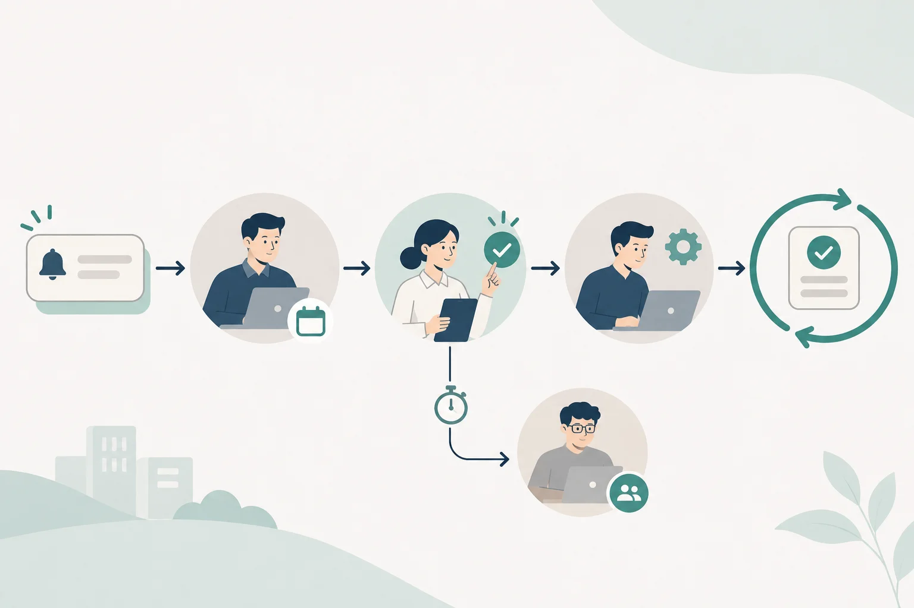

Article · 飞函
Article · 飞函
机器人接入业务通知前，先厘清三种责任
订单系统发现一笔异常，机器人随即向业务群发出通知。群里有人看到了消息，却以为值班同事会跟进；值班同事则以为业务负责人已经接手。等到客户询问进度，团队才发现：通知发出了，责任却没有交到任何人手里。
接入业务通知前，企业需要先回答三个问题：**谁接收，谁确认，谁处理。**这三个动作可以由同一人完成，也可以分属不同岗位，但每一步都应有明确的责任人和交接方式。
接收：把通知送到当班的人
接收方不是一个笼统的“相关人员群”。设计通知规则时，应按事件类型、业务范围和排班，确定通知进入哪个协作空间，以及谁负责当班查看。跨班次或跨部门的事件，还要约定主接收方和替补接收方。
例如，订单异常可以先交给当班运营接收；涉及系统故障时，再按规则通知技术值班人员。这样做的目的，是让第一站可预期，减少消息在多个群之间转发、却始终无人承接的情况。
确认：明确有人接手
消息已送达或已读，只能说明通知进入了视野，不能代替业务上的接手确认。企业应约定由谁在多长时间内确认，并让确认动作留下可识别的记录，例如回复事件编号与“已接手”。超过约定时间仍无人确认时，通知应升级给替补人员或负责人。
确认也不等于问题已经解决。它表达的是“我知道这件事，并承担下一步协调责任”。把这一步单独列出，才能看清通知卡在送达、接手，还是后续处理。

处理：给事件一个可核对的结果
处理人可能与确认人不同。确认人接手后，应将事件分派给具备处置权限的岗位，并约定处理时限、进展反馈和完成标准。订单异常可能需要运营核对订单、技术人员排查系统、业务负责人决定对客户的回复；每次转交都应明确下一位责任人。
处理完成后，记录结果和必要的事件编号，便于团队核对“通知—确认—处置”是否闭合。若问题仍未解决，也应说明当前进展、下一步动作和预计反馈时间，避免群里只剩一句“处理中”。
先定责任，再配置机器人
飞函提供自定义机器人这一通知入口。企业在接入业务系统前，可以先拿一类高频通知试运行：写清触发条件、接收岗位、确认方式、处理岗位和超时升级规则，再检查一次真实事件从发出到结束的记录。规则跑通后，再扩展到其他通知类型。
机器人负责把消息带到协作现场；接收、确认和处理的责任仍需由企业自己定义。只有这三步都能找到对应的人和结果，业务通知才真正进入了工作流程。